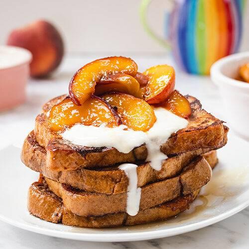

Peach French Toast

Description:
This is a fantastic Breakfast meal that can be served for anyone!
there is a great blend of peaches and French toast,
it smells great when cooking, and is certainly going to put a smile on your
face once you taste it. This recipe is structured to provide a total of 8
servings. It takes around 9 hours to prepare and 45 minutes to cook.
Ingredients:
- 1 cup packed brown sugar
- 1/2 cup butter
- 5 eggs
- 1 tablespoon vanilla extract
- 1 pinch ground cinnamon, or to taste
- 2 tablespoons water
- 1 (29 ounce) can sliced peaches, drained
- 12 (3/4 inch thick) slices day-old French bread
Steps:
- In a saucepan, stir together the brown sugar, butter and water.
Bring to a boil, then reduce heat to low, and simmer for 10 minutes,
stirring frequently.
- Pour the brown sugar mixture into a 9x13 inch baking dish, and tilt the
dish to cover the entire bottom. Place peaches in a layer over the sugar
coating, then top with slices of French bread. In a medium bowl, whisk
together the eggs and vanilla. Slowly pour over the bread slices to coat
evenly. Sprinkle cinnamon over the top. Cover and refrigerate for 8 hours
or overnight.
- Remove the dish from the refrigerator about 30 minutes before baking to
come to room temperature. Preheat the over to 350 degrees F (175 degrees C)
- Bake for 25 to 30 minutes in the preheated oven, or until the bread is
golden brown. Spoon out portions to serve.
Next Recipe
Return to Main Page